DefiniçãoAcropustulose infantil é uma erupção vesiculopustular recorrente, autolimitada, intensamente pruriginosa das palmas e solas, ocorrendo em crianças. É uma condição benigna com um curso muitas vezes mais crônico do que outras lesões neonatais benignas.
EpidemiologiaA incidência da acropustulose infantil é desconhecida. Relatos iniciais propuseram que bebês negros do sexo masculino eram mais comumente afetados, porém estudos atuais não comprovaram essa predisposição.
EtiologiaA etiologia ainda é desconhecida
Uma reação de hipersensibilidade inespecífica à escabiose foi postulada porque muitos pacientes foram tratados para escabiose antes de serem diagnosticados com acropustulose infantil. No entanto, os incidentes de recém-nascidos afetados com acropustulose tornaram a reação à escabiose uma fonte improvável para a erupção em todos os casos. As culturas bacterianas e virais são negativas nesses pacientes e a imunofluorescência negativa na bópsia sugere não ser um processo autoimune. Atopia foi encontrada em 20% dos casos e em 30% das famílias. Eosinófilos sanguíneos foram encontrados em 70% das lesões.
Manifestações ClínicasGeralmente, crianças com idade de 2-12 meses com acropustulose exibem máculas eritematosas pruriginosas ou pápulas que progridem em vesículas e depois em pústulas. As mãos e os pés estão sempre envolvidos, comumente palmas, solas e superfícies laterais, mas também podem acometer membros, tronco e couro cabeludo. As lesões se resolvem com hiperpigmentação macular e nenhum outro sistema de órgãos está afetado. As crianças, durante as crises, frequentemente ficam irritadas e desconfortáveis, mas com bom estado geral. As recorrências normalmente ocorrem em intervalos de 2-4 semanas e podem durar 5 a 10 dias. Porém, a intensidade e duração dos sintomas diminuem a cada recorrência.
DiagnósticoO diagnóstico é baseado em características clínicas, mas culturas e esfregaços ajudam a excluir etiologias infecciosas potencialmente tratáveis. A bópsia geralmente não é necessária, mas, se realizada, revela pústula unilocular, subcorneal ou intraepidérmica contendo neutrófilos e eosinófilos.
Diagnóstico DiferencialO diagnóstico diferencial de acropustulose infantil inclui:
- Eczema disidrótico;
- Psoríase pustular;
- Doença da mão-pé-boca (Coxsackievirus ou, menos frequentemente, Enterovirus, Herpes zoster);
- Escabiose;
- Impetigo.
TratamentoEmbora a acropustulose seja autolimitada, resolvendo em dois anos, recomenda-se o tratamento para aliviar o prurido grave. Em crianças com mais de 1 ano, anti-histamínicos em doses indutoras do sono (difenidramina 1-1,25 mg/kg a cada 6 horas, ou hidroxizina 0,5 mg/kg a cada 12 horas e 1 mg/kg a cada 24 horas ao deitar) aliviam o prurido, mas não alteram o curso da doença. Corticosteroides tópicos de alta potência, como propionato de clobetasol 0,05% ou dipropionato de betametasona 0,05% pomada, são muito potentes para bebês. O manejo conservador com pomada de hidrocortisona 2,5%, ou seleção semelhante de classe 6, aplicada a cada 12 horas, pode ajudar a aliviar as crises. A oclusão com meias pode potencializar os efeitos e reduzir os riscos de absorção sistêmica quando corticosteroides classe 1 são empregados. A absorção sistêmica de corticoides tópicos na acropustulose infantil é limitada pela distribuição localizada das lesões, espessura da pele nas áreas afetadas e periodicidade das erupções.
Dapsona na dose de 1-2 mg/kg/dia pode ser considerada em casos graves que não respondem ao tratamento tópico. Os efeitos adversos dela incluem neuropatia periférica, anemia aplástica, hepatite, anemia hemolítica e metaemoglobinemia.
Os antibióticos tópicos ou orais não devem ser administrados a menos que as lesões se tornem secundariamente infectadas com bactérias, exceto eritromicina (40 mg/kg/dia por via oral) como alternativa aos corticosteroides tópicos, pois parece ter efeito anti-inflamatório.
O prognóstico desses pacientes é excelente. Usualmente, os episódios dos sintomas diminuem em gravidade com surtos sucessivos e a maioria desaparece completamente quando o indivíduo tem idade entre 2 e 3 anos.
REFERÊNCIAS BIBLIOGRÁFICAS
1. Infantile acropustulosis. Sandra Ferreira 1 , Susana Machado 1 , Manuela Selores 1. J Paediatr Child Health. 2020 Jul;56(7):1165-1166.
2. Childhood acropustulosis A study of 10 cases. Lowy G, Serapião CJ, Oliveira MM. Cutan Ibero Lat Am. 1986;14(3):171-6.
3. Atypical acropustulosis in infancy. Truong AL, Esterly NB. Int J Dermatol. 1997 Sep;36(9):688-91.
4. Palmoplantar reactions. Marghescu S. Dermatology. 1994;189 Suppl 2:30-4.
5. Pediatric acropustulosis. Prigent F, Michon L, Civatte J. Ann Dermatol Venereol. 1984;111(8):747-8.
Atlas de imagens 13


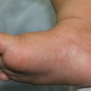

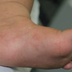

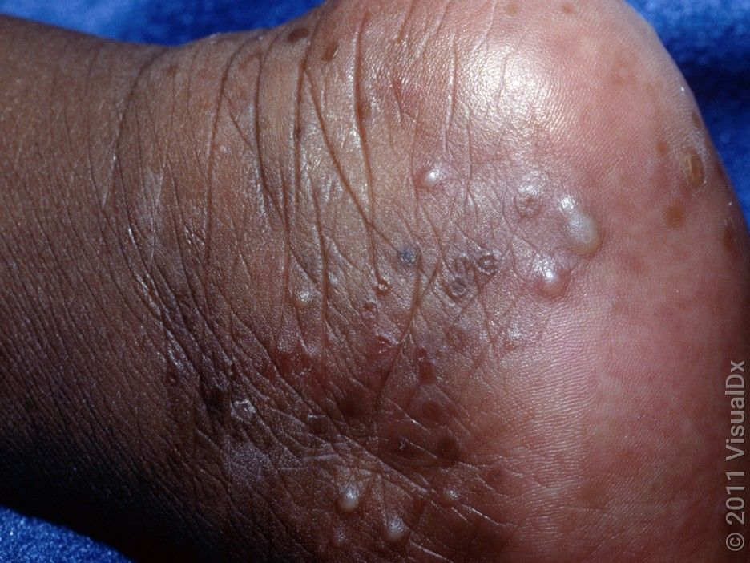

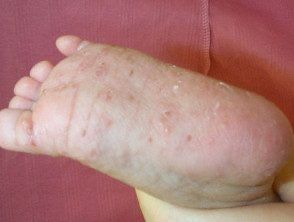

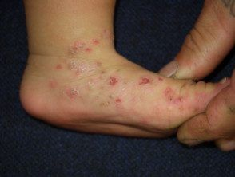

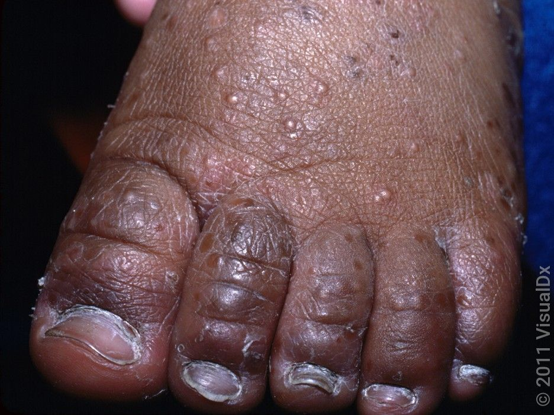

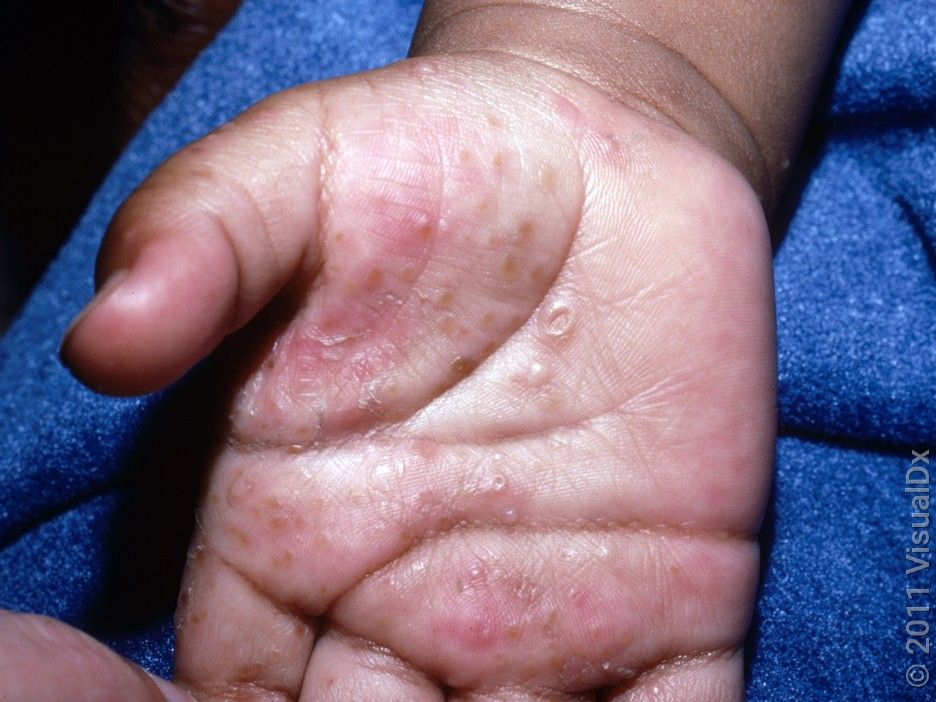

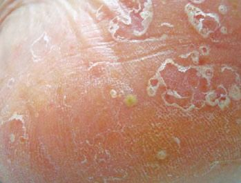

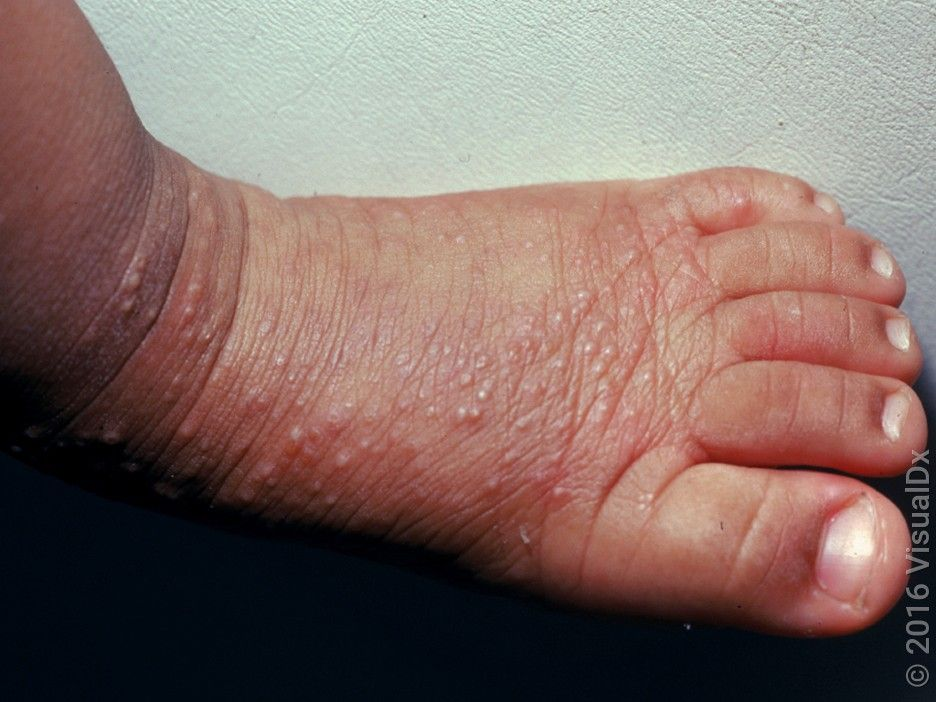

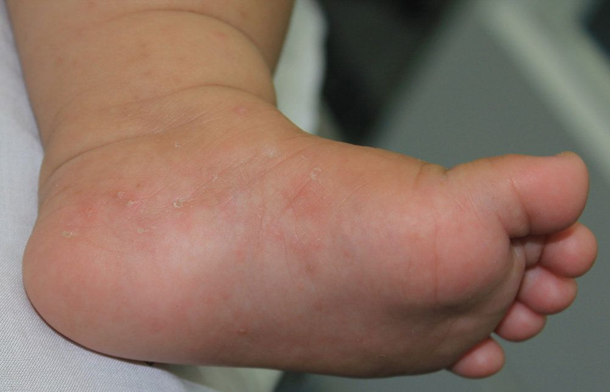

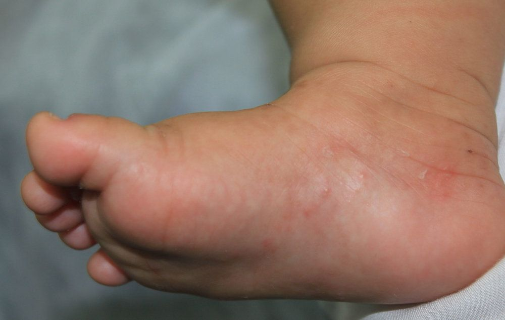

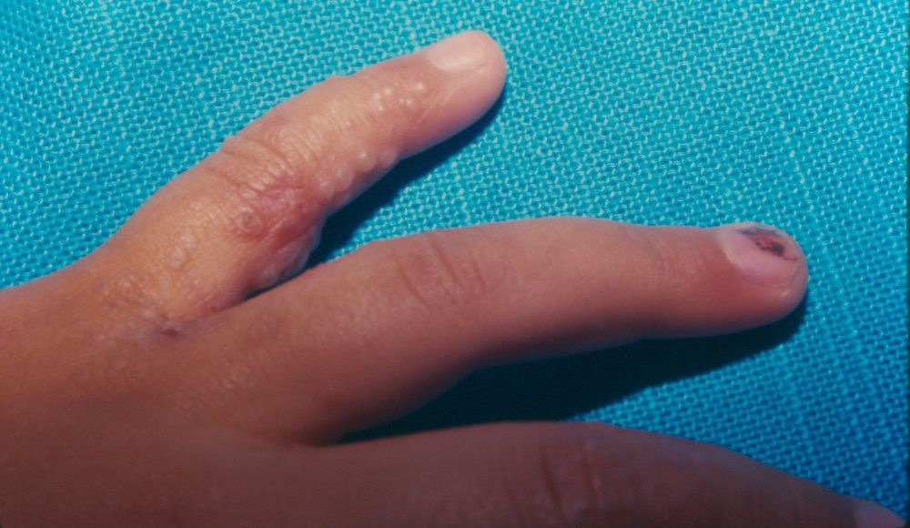
Na Skin Prime
Como podemos ajudar
O texto sobre Acropustulose infantil não cita procedimentos específicos entre os oferecidos pela clínica. A conduta é definida em consulta: nossa equipe avalia as manifestações na pele e orienta o tratamento ou o encaminhamento adequado.